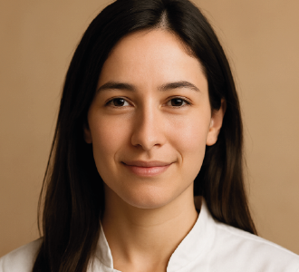
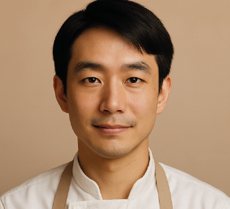
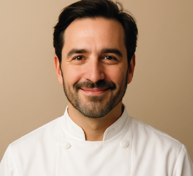

Speakers
-

Lucía Márquez
Chef y divulgadora gastronómica especializada en cocina mediterránea contemporánea.
-

Hiro Tanaka
Investigador culinario centrado en técnicas japonesas y procesos tradicionales de fermentación.
-
Marta Esquivel
Pastelera creativa que combina repostería clásica con tendencias modernas y sabores florales.
-

Enzo Berruti
Experto en cocina italiana que explora recetas regionales y métodos de cocción ancestrales.
-
Amara Johnson
Consultora culinaria enfocada en sostenibilidad, productos locales y experiencias sensoriales.
-
Diego Alcázar
Chef experimental que fusiona cocina latinoamericana con técnicas contemporáneas de autor.